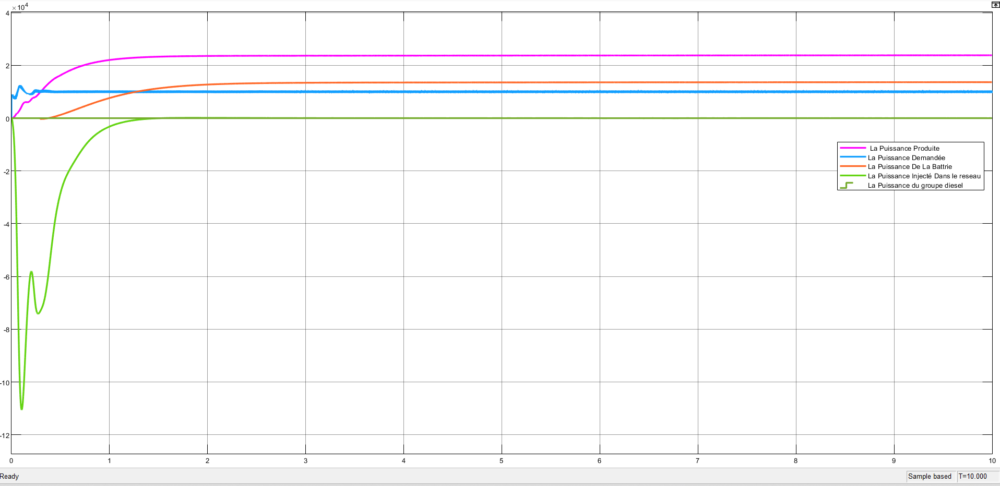
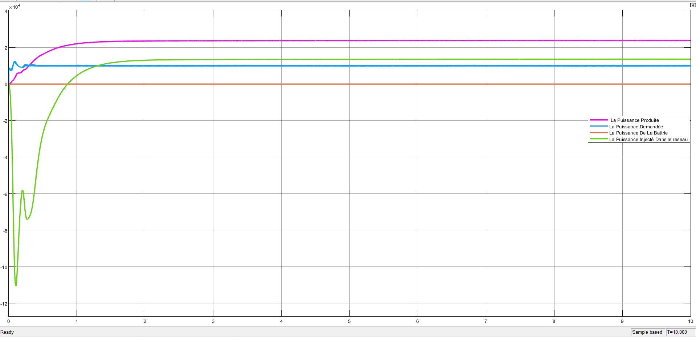
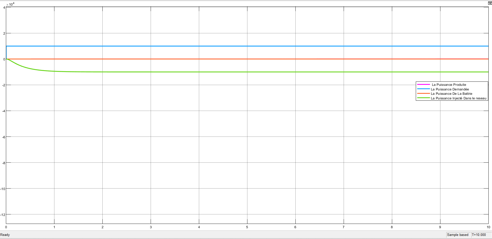
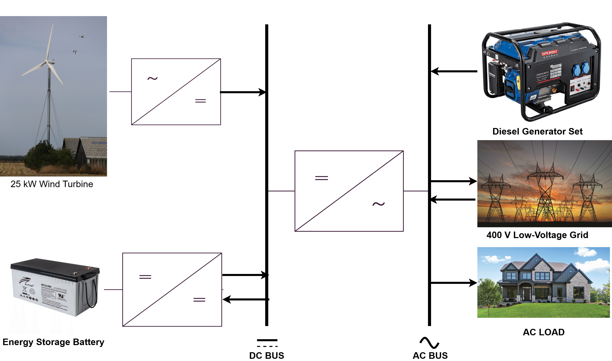
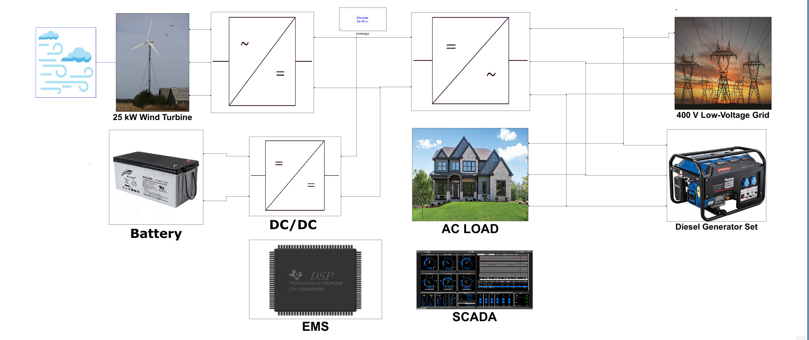

Microgrid basse tension 400 V alimentant une charge résidentielle, en mode réseau connecté et îloté
Une éolienne seule ne peut pas garantir une alimentation continue : la production varie avec le vent. Ce projet étend une chaîne éolienne à PMSM avec un stockage par batterie, un groupe diesel de secours et le réseau 400 V, le tout coordonné par un système de gestion énergétique (EMS). L'objectif était de garantir en toutes circonstances l'alimentation d'une charge résidentielle, en privilégiant l'énergie éolienne et en limitant le diesel aux situations critiques. L'ensemble est modélisé et simulé sous MATLAB/Simulink.
Source renouvelable principale, pilotée par commande FOC et algorithme MPPT
Bloc Battery de Simscape : stocke l'excédent, comble les déficits et fournit le suivi du SOC
Interface bidirectionnelle entre la batterie et le bus DC, en charge comme en décharge
Secours ultime, modélisé par une machine synchrone à aimants permanents (PMSG)
Modélisée par une résistance équivalente pour étudier les échanges de puissance et la stabilité
Reçoit vent, charge, SOC et disponibilité du réseau, puis commande réseau, onduleur, batterie et diesel
La priorité est donnée à l'alimentation de la charge, puis à l'éolien, puis à la batterie. Le diesel n'intervient qu'en dernier recours. L'EMS choisit entre cinq modes de fonctionnement :
La commande du hacheur change automatiquement selon l'état du réseau, grâce à un sélecteur logique sous Simulink :
Les cinq scénarios montrent que l'EMS prend des décisions cohérentes selon l'état des sources, du stockage et de la charge, tout en préservant l'équilibre énergétique et la stabilité du bus DC. Dans le scénario 1, une faible part de l'excédent est absorbée par le réseau à cause du retard de calcul du courant de référence de la batterie. En perspective : stratégies de gestion plus avancées, intégration d'autres sources renouvelables, et validation expérimentale sur banc d'essai ou plateforme temps réel.




